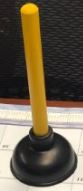

Introduction
In my previous post, I worked through how to get your league information from the ESPN and YAHOO APIs.
The motivation for this project was to compare two leagues performances over the 2018 fantasy football season. As the ring leader of the West Point Department of Mathematical Sciences fantasy football league, we had 20 managers. This, of course, is too many for one league so we split the teams across two leagues. I managed an ESPN league, and a colleague managed a yahoo league.
This post will pick up where last post left off and do some analysis between the two leagues.
I have hid my code to improve readability. If you are interested in the code for this script, send me a note, as I am happy to share.
The Data
The data I use for this post comes from two leagues - one from yahoo and one from ESPN. It is all available below.
Awards
Every week, we hand out prizes for the highest overall point total and lowest.
Highest Weekly Point Total
The prizes for the highest points across both leagues is the honor of possessing the “Mug of my Mug” for the week. Yes, as you can see below, it is a mug with a picture of my face. The extra great thing about this mug, as you may be able to see, is I took it concussed with a fractured face. I earned my concussion and facial fracture in a softball collision. Yes, I was called out…
Now, who wins the mug each week?
## Team1 Score week league
## 1 Mauled Mentos 141.84 1 yahoo
## 2 Yo_soy_Fiesta! 170.28 2 yahoo
## 3 2-2-2_Mega-H-Ertz 141.84 3 espn
## 4 Las Vegas_Radians 152.66 4 espn
## 5 2-2-2_Mega-H-Ertz 146.52 5 espn
## 6 Gosset's_T-Down 154.48 6 espn
## 7 General Puddin Pants 162.70 7 yahoo
## 8 Bama 156.56 8 yahoo
## 9 Brady for President 182.18 9 yahoo
## 10 Mauled Mentos 182.12 10 yahoo
## 11 'R'm Chair_Quarterback 165.22 11 espn
## 12 Brady for President 156.10 12 yahoo
## 13 Brady for President 161.80 13 yahoo
## 14 'R'm Chair_Quarterback 147.20 14 espn
## 15 Baller's Ballers 135.82 15 yahoo
## 16 2-2-2_Mega-H-Ertz 176.94 16 espnLowest Weekly Point Total
In a similar vein, we awarded the coveted (not so much) plunger for the manager who scored the least points each week.

Here are the plunger winners.
## Team1 Score week league
## 1 The Big Gronkowski 89.24 1 yahoo
## 2 Mauled Mentos 79.88 2 yahoo
## 3 Viking Joe_Lindquist 73.68 3 espn
## 4 Raw_and Savage 81.42 4 espn
## 5 Raw_and Savage 72.98 5 espn
## 6 Last Manning Standin 73.42 6 yahoo
## 7 Bama 73.54 7 yahoo
## 8 Lights Kamara Action 89.30 8 yahoo
## 9 Last Manning Standin 47.46 9 yahoo
## 10 Raw_and Savage 83.96 10 espn
## 11 General Puddin Pants 86.30 11 yahoo
## 12 General Puddin Pants 61.96 12 yahoo
## 13 Baller's Ballers 69.78 13 yahoo
## 14 2-2-2_Mega-H-Ertz 75.64 14 espn
## 15 'R'm Chair_Quarterback 64.26 15 espn
## 16 General Puddin Pants 63.14 16 yahooWhich Leagues are better?
Lets look at several metrics.
Most Mugs
## league TotalMugs
## 1 espn 7
## 2 yahoo 9Most Plungers
## league TotalMugs
## 1 espn 6
## 2 yahoo 10League Points
## week league WeeklyPoints
## 1 1 espn 1156.20
## 2 1 yahoo 1161.14
## 3 2 espn 1140.32
## 4 2 yahoo 1148.46
## 5 3 espn 1020.78
## 6 3 yahoo 1071.54
## 7 4 espn 1119.52
## 8 4 yahoo 1205.86
## 9 5 espn 1101.86
## 10 5 yahoo 1106.20
## 11 6 espn 1195.88
## 12 6 yahoo 1150.54
## 13 7 espn 1092.38
## 14 7 yahoo 1206.48
## 15 8 espn 1157.46
## 16 8 yahoo 1139.16
## 17 9 espn 1077.72
## 18 9 yahoo 1138.78
## 19 10 espn 1220.06
## 20 10 yahoo 1217.40
## 21 11 espn 1213.96
## 22 11 yahoo 1177.58
## 23 12 espn 1161.62
## 24 12 yahoo 1136.68
## 25 13 espn 1083.74
## 26 13 yahoo 1043.60
## 27 14 espn 1063.82
## 28 14 yahoo 847.92
## 29 15 espn 931.02
## 30 15 yahoo 790.16
## 31 16 espn 1201.24
## 32 16 yahoo 892.18Who is good, and who is lucky?
One of the more frustrating things in fantasy football is to score a ton of points, only to play the team who scores the most in your league. Lets look at some measures of luck.
Who played the most mugs?
## # A tibble: 13 x 2
## Team2 LostAgainstTheMug
## <chr> <int>
## 1 Stampeders 3
## 2 Baller's Ballers 2
## 3 'R'm Chair_Quarterback 1
## 4 2-2-2_Mega-H-Ertz 1
## 5 Epsilon_Ballers 1
## 6 General Puddin Pants 1
## 7 Green_Baye's Theorem 1
## 8 Last Manning Standin 1
## 9 Lights Kamara Action 1
## 10 Mauled Mentos 1
## 11 Team_Shank a Potamus 1
## 12 Viking Joe_Lindquist 1
## 13 Yo_soy_Fiesta! 1Those poor stampeders just couldn’t catch a break!
Who played the most plungers?
## # A tibble: 11 x 2
## Team2 BeatTheWeakling
## <chr> <int>
## 1 The Big Gronkowski 3
## 2 Baller's Ballers 2
## 3 Gosset's_T-Down 2
## 4 Green_Baye's Theorem 2
## 5 Bama 1
## 6 Epsilon_Ballers 1
## 7 Las Vegas_Radians 1
## 8 Lights Kamara Action 1
## 9 Mauled Mentos 1
## 10 Raw_and Savage 1
## 11 Stampeders 1Man, I wish I could catch some luck. Good work Big Gronkowski for beating down the little guys…
Overall Points Scored vs Winning Percentage
First, who had the highest winning percentage?
## # A tibble: 20 x 4
## # Groups: win [20]
## win league winpercent SeasonPointsScored
## <chr> <chr> <dbl> <dbl>
## 1 Brady for President yahoo 0.75 2207.
## 2 Epsilon_Ballers espn 0.688 1854.
## 3 Gosset's_T-Down espn 0.688 2059.
## 4 General Puddin Pants yahoo 0.625 1694.
## 5 Yo_soy_Fiesta! yahoo 0.625 1919.
## 6 2-2-2_Mega-H-Ertz espn 0.562 1910.
## 7 Baller's Ballers yahoo 0.562 1832.
## 8 Green_Baye's Theorem espn 0.562 1834.
## 9 Las Vegas_Radians espn 0.562 1805.
## 10 'R'm Chair_Quarterback espn 0.5 1767.
## 11 Stampeders yahoo 0.5 1660.
## 12 Team_Guns N' Rosas espn 0.5 1757.
## 13 Bama yahoo 0.438 1829.
## 14 Lights Kamara Action yahoo 0.438 1776.
## 15 Mauled Mentos yahoo 0.438 1912.
## 16 Team_Shank a Potamus espn 0.438 1702.
## 17 Raw_and Savage espn 0.375 1637.
## 18 The Big Gronkowski yahoo 0.312 1387.
## 19 Last Manning Standin yahoo 0.125 1219.
## 20 Viking Joe_Lindquist espn 0.125 1613.It looks like some teams won more than they should have.
Sometimes you can get lucky if you play teams that don’t score much. What would everyone’s record be if you played every team every week. That should take some “luck” out of it.
## # A tibble: 20 x 6
## # Groups: win [20]
## win winpercent league WeekWins WeekLoses EveryWeekEveryTeamWinP~
## <chr> <dbl> <chr> <dbl> <dbl> <dbl>
## 1 Brady for Presi~ 0.75 yahoo 235 69 0.773
## 2 Epsilon_Ballers 0.688 espn 164 140 0.539
## 3 Gosset's_T-Down 0.688 espn 210. 94 0.690
## 4 General Puddin ~ 0.625 yahoo 131 173 0.431
## 5 Yo_soy_Fiesta! 0.625 yahoo 177 127 0.582
## 6 2-2-2_Mega-H-Er~ 0.562 espn 174 130 0.572
## 7 Baller's Ballers 0.562 yahoo 148. 155 0.489
## 8 Green_Baye's Th~ 0.562 espn 156 148 0.513
## 9 Las Vegas_Radia~ 0.562 espn 154 150 0.507
## 10 'R'm Chair_Quar~ 0.5 espn 139 165 0.457
## 11 Stampeders 0.5 yahoo 116 188 0.382
## 12 Team_Guns N' Ro~ 0.5 espn 139 165 0.457
## 13 Bama 0.438 yahoo 166 138 0.546
## 14 Lights Kamara A~ 0.438 yahoo 146 158 0.480
## 15 Mauled Mentos 0.438 yahoo 174 130 0.572
## 16 Team_Shank a Po~ 0.438 espn 129 175 0.424
## 17 Raw_and Savage 0.375 espn 109 195 0.359
## 18 The Big Gronkow~ 0.312 yahoo 100 147 0.405
## 19 Last Manning St~ 0.125 yahoo 63 184 0.255
## 20 Viking Joe_Lind~ 0.125 espn 99 205 0.326Who scored the most and least points?
## Team league SeasonPoints SeasonPointsAgainst
## 1 'R'm Chair_Quarterback espn 1766.70 1769.16
## 2 2-2-2_Mega-H-Ertz espn 1909.54 1707.10
## 3 Baller's Ballers yahoo 1831.74 1780.00
## 4 Bama yahoo 1828.62 1958.28
## 5 Brady for President yahoo 2207.02 1743.94
## 6 Epsilon_Ballers espn 1854.02 1635.28
## 7 General Puddin Pants yahoo 1694.04 1717.54
## 8 Gosset's_T-Down espn 2059.30 1947.56
## 9 Green_Baye's Theorem espn 1834.08 1887.32
## 10 Las Vegas_Radians espn 1804.60 1816.20
## 11 Last Manning Standin yahoo 1218.82 1576.44
## 12 Lights Kamara Action yahoo 1775.62 1919.84
## 13 Mauled Mentos yahoo 1912.14 1776.54
## 14 Raw_and Savage espn 1636.82 1791.10
## 15 Stampeders yahoo 1659.50 1717.62
## 16 Team_Guns N' Rosas espn 1757.18 1720.12
## 17 Team_Shank a Potamus espn 1701.86 1793.24
## 18 The Big Gronkowski yahoo 1387.12 1538.68
## 19 Viking Joe_Lindquist espn 1613.48 1870.50
## 20 Yo_soy_Fiesta! yahoo 1919.06 1704.80Points For vs Points Against

It looks like Gosset’s T-Down scored a lot and had a lot of points scored against him. Its impressive he pulled off 11 wins.
On the other hand, Brady for President scored a lot of points but only had a moderate amount scored against him - This is probably what allowed him to win 12 games.
However, Last Man Standin and The Big Gronkowski didn’t have that many points scored against them, so they made up for it by not scoring that many points themselves. That was nice of you guys.
And Interestingly enought… R’m Chair Quarterback (me) is just about as average as it gets… I always strive to be mediocre.
Winning Percentage vs Every Team Every Week
Another measure of luck is comparing a team’s win percentage against how well a team would have done if they played every team every week.
Every Team Every Week Win Percentage